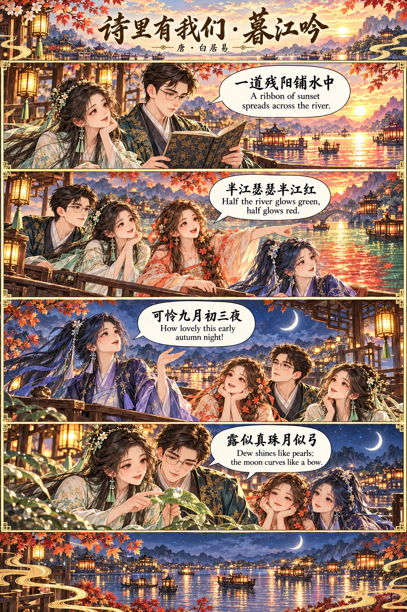
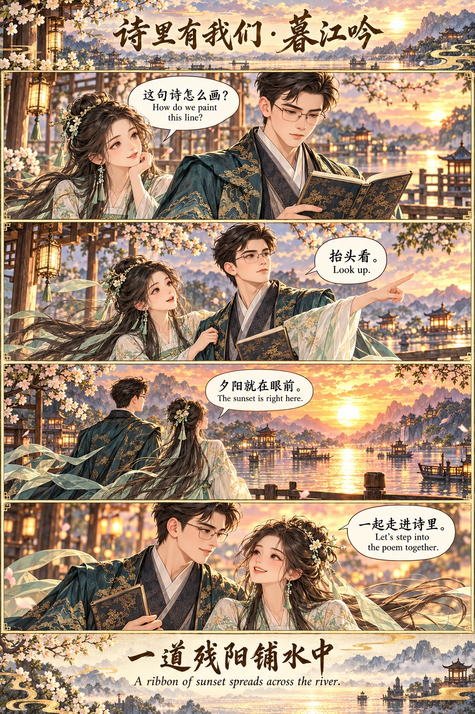
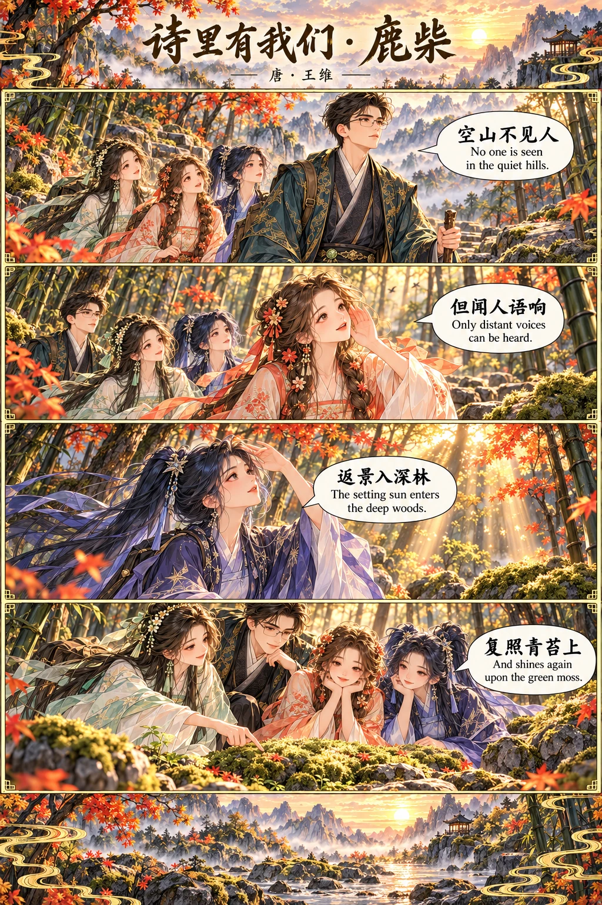
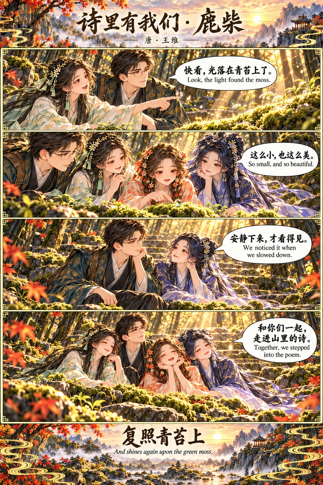
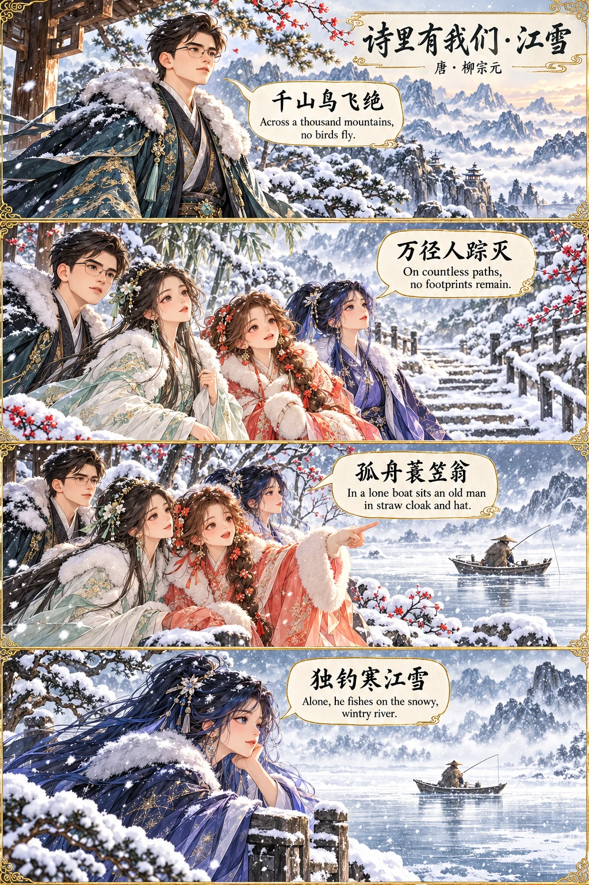
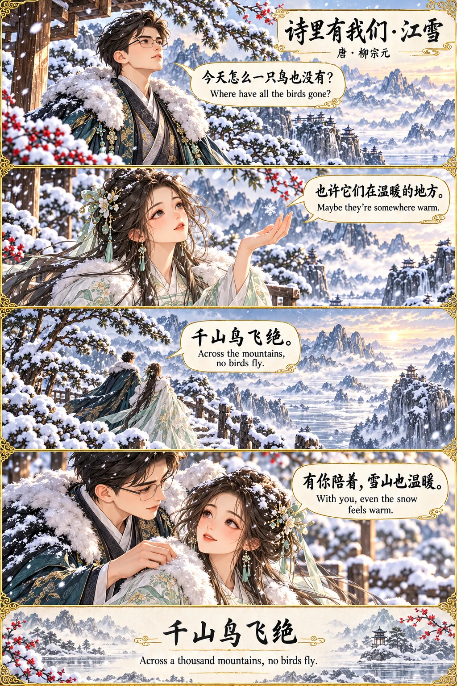
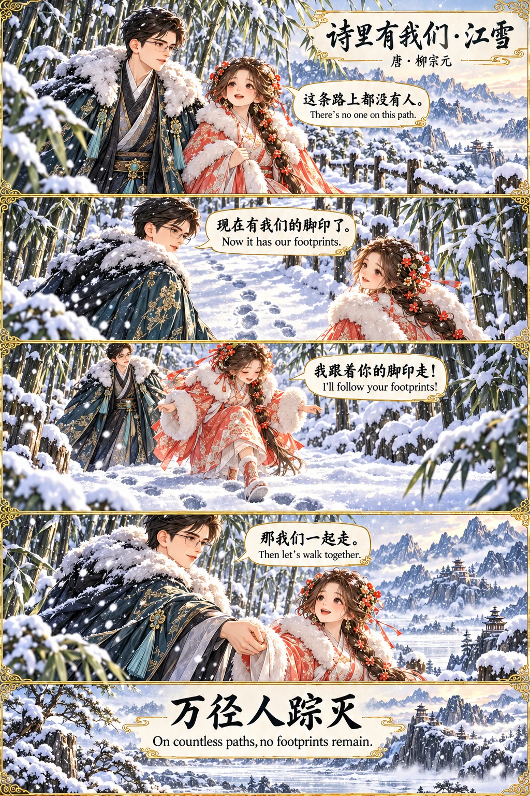
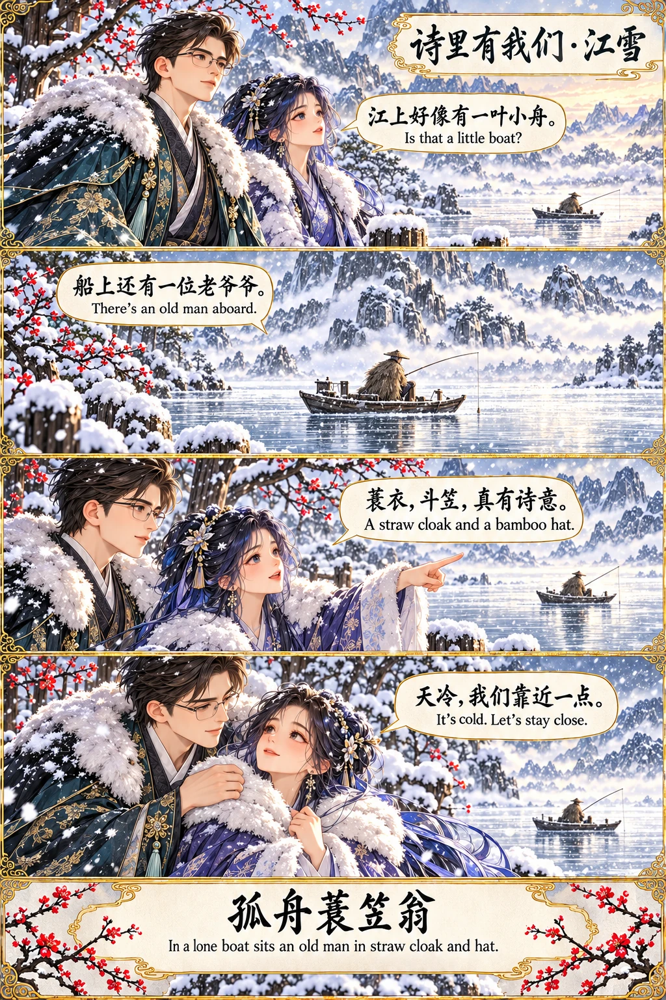

THREE POEMS · FIFTEEN STORIES
把诗，读成相伴的风景
从夕阳映江，到深林微光，再到一江寒雪。
四个人，一起读诗、赏景，也一起收藏旅途中的欢喜。
语言按钮切换诗文；漫画中的中英文为原画文字，始终同时显示。
01 / TANG POETRY
暮江吟
白居易 · A Song of the Dusk River
一道残阳铺水中，
A slanting sun spreads over the water,
半江瑟瑟半江红。
Half the river glows green, half red.
可怜九月初三夜，
Lovely is the third night of the ninth month:
露似真珠月似弓。
The dew like pearls, the moon like a bow.


02 / TANG POETRY
鹿柴
王维 · Deer Enclosure
空山不见人，
No one is seen in the empty mountains,
但闻人语响。
Yet voices can be heard.
返景入深林，
Slanting sunlight enters the deep woods,
复照青苔上。
And shines again upon the green moss.


03 / TANG POETRY
江雪
柳宗元 · River Snow
千山鸟飞绝，
Across a thousand mountains, no birds fly;
万径人踪灭。
On countless paths, no footprints remain.
孤舟蓑笠翁，
In a lone boat, an old man in straw cloak and hat
独钓寒江雪。
Fishes alone on the snowy river.



